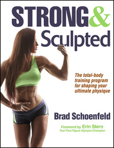
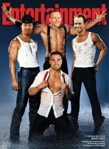

Progressive overload is a well-established principle for achieving continued progress in resistance training programs. In general terms, progressive overload can be defined as consistently challenging the neuromuscular system beyond its present capacity. It’s commonly accepted that this...
Brad Schoenfeld, Ph.D, C.S.C.S., is an internationally renowned fitness expert and widely regarded as one of the leading authorities on body composition training (muscle development and fat loss). He is a lifetime drug-free bodybuilder, and has won numerous natural bodybuilding titles.
Wanted to keep you updated on all that is going on at the moment. So much to share!

In case you haven’t heard, my newest consumer book called Strong and Sculpted, was released a few weeks ago. Happy to report it’s been the top-selling new book in Amazon.com’s “weight training” category and has gotten stellar reviews from consumers and pros alike. It’s a scientifically-based handbook for optimizing muscle development, providing step-by-step guidelines for program design. Check it out! In addition, my upcoming textbook called, Science and Development of Muscle Hypertrophy, is scheduled to be released at the end of the month. It will be the first text to provide an evidence-based perspective on muscle growth, covering all the research and its practical implications. If you’d like to be amongst the first to receive the book, it’s now available for pre-order on Amazon.com at a 20% discount.
A recent study published in the Journal of the International Society of Sports Nutrition reported that branched chain amino acid (BCAA) supplementation helped accelerate fat loss while preserving lean mass in trained individuals performing resistance training when dieting. On the surface, this would seem to provide compelling evidence of a benefit to supplementation. However, after scrutinizing the study’s methods, my colleagues Alan Aragon, Brad Dieter, and I found some glaring issues with the statistical procedures and reporting of data. We thus wrote a letter to the edtior detailing these errors and inconsistencies. Give it a read, as it points out the importance of perusing the entire study – not just the abstract – when drawing practical applications from research.
Here’s a vid of my favorite way to perform upright rows. The rope takes stress off the wrists, facilitating movement. Make sure your upper arms don’t go beyond parallel to the ground and your elbows stay above the level of your wrists.
Big shout out to my buddy and partner-in-science Bret Contreras for officially publishing the first long-term study on performance outcomes in the hip thrust versus the squat. Bret has devoted his career to developing a better understanding of how strength and hypertrophy of the hip extensors can be optimized through resistance training, and this study provides an important addition to the literature. I know Bret’s working on a number of follow-ups to further this line of research. Stay tuned.

I have a number of speaking engagements schedule for this summer. First up is Bropocalypse 2016 taking place on June 11th and 12th in Sydney, Australia. I’ll be speaking with uber-colleagues Alan Aragon, Bret Contreras, and James Krieger on what will be a terrific weekend of evidence-based learning. Next up is the NSCA National Conference in New Orleans this July, where I’ll speak on loading strategies for maximizing muscular gains. Then comes the CanFitPro World Expo in Toronto, Canada where I’ll be speaking on a number of fitness- and nutrition-related topics, as well as doing a book sign at the expo. Finally, at the end of August I’ll be in Oslo, Norway at the AFPT Fitness Convention along with some of the best and brightest minds in fitness. Last year’s event was a sell-out so if you’re planning to attend book early!
I recently appeared again on Superhuman Radio to discuss some of my recent research as well as my new book. The host, Carl Lanore, always asks pointed questions that make for a compelling listen.
Last but not least, I’ve uploaded a majority of my recent publications to my ResearchGate page. Included is our recent meta-analysis on training frequency, an original study comparing a daily undulating periodized routine to a traditional hypertrophy protocol, and a study on the effects of conjugated linoleic acid (CLA) on fat loss, amongst others. The PDFs are free to download and soak up the knowledge!
My training facility, The Personal Training Center for Women, was featured in the Sunday edition of the Gannett Newspaper, Journal News. Here is a link to read the article:
I recently did an interview with NPR radio to talk about my new book, Women’s Home Workout Bible. The interview was conducted by WSIU Radio’s Jeff Williams and discusses the relevant aspects about setting up a home gym. You can listen to the interview at the following link:
I will be giving a webinar on the “Facts and Fallacies of Fitness” on Wednesday, June 16 at 2 pm, EST. The webinar is being hosted by the NSCA and will debunk some of the common myths associated with exercise and nutrition in an evidence-based fashion. The webinar is open to the general public and will involve a question/answer session following the presentation. I hope you will join me for what I guarantee will be an enlightening session. You can register for the webinar by clicking on the poster below:
I will be giving a webinar on the “Facts and Fallacies of Fitness” on Wednesday, June 16 at 2 pm, EST. The webinar is being hosted by the NSCA and will debunk some of the common myths associated with exercise and nutrition in an evidence-based fashion. The webinar is open to the general public and will involve a question/answer session following the presentation. I guarantee it will be informative for all attending. You can register for the webinar at the link below:
For those of you in the NY area, I will be appearing this Sunday, January 17, on Today in New York (NBC). The topic will be effective home workout strategies. Hope you can tune in!
Just wanted to extend a big thanks to all who attended my book signing for Women’s Home Workout Bible at Borders Books in Mt. Kisco, and helped to make the event a success. For those who couldn’t make it, here’s a photo from the event.


 Entries (RSS)
Entries (RSS)


{kind=link}
{kind=link}